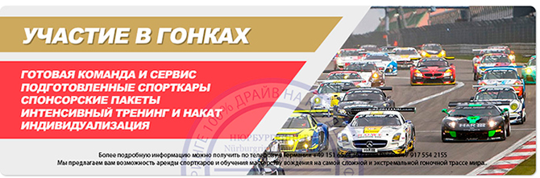
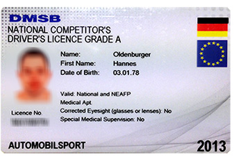

Участие в гоночных сериях на Нюрбургринге
Nürburgring Endurance Race ( VLN ) — это немецкий национальный чемпионат по кольцевым гонкам, который проходит в 9 этапов на гоночной трассе Нюрбургринг Нордшляйфе и GP-курсе.
Предлагаем вам войти в этот закрытый мир культового, мирового автоспорта и принять участие в одной из самых престижных гоночных серий. Гоночная школа на Нюрбургринге вместе с командой поможет вам приобрести необходимый опыт и накат по гоночной трассе. Мы предоставим вам готовый для заездов спорткар и инструктора, который поможет вам на первых и последующих порах достигнуть первоклассного результата для допуска к заездам в гоночной серии VLN или 24-часа Нюрбургринга.

Протяженность трассы по регламенту (VLN конфигурация трассы Нордшляйфе и спринт-курс GP) — 24, 433 километра. 8 этапов проходит в регламенте 4-часовой гонки и один этап в регламента 6-часовой гонки.
С момента своего рождения в 1977 году гоночная серия VLN давно стала одной из самых популярных, как среди новичков, так и профессионалов. Регламент для участия в чемпионате достаточно демократичен. Участвовать в гонках в зависимости от класса, могут как самые «маломощные» компактные хэтчбеки так и настоящие суперкары типа McLaren, Ferrari, Lamborghini, Mercedes SLS или Porsche GT3. Всего в гонке принимает участи до 200 автомобилей и порядка 600 пилотов. Каждый автомобиль пилотируется поочерёдно несколькими гонщиками. Их главная задача — продержаться на трассе как можно дольше и показать хорошее время прохождения круга. Другими словами — это настоящая гонка на «выживание».
Не смотря на то, что чемпионат является «Немецкой гоночной серией», принять участие в нём может каждый желающий, не зависимо от национальности и религиозных взглядов.
Принять участие в Nürburgring Endurance Race
Для участия в одном из этапов гоночной серии Endurance Race вам необходимо получить международную гоночную лицензию класса «С» или национальную «D», которую выдает Российская Автомобильная Федерация (РАФ). Если вы проживаете в другой стране имея местную прописку и гражданство, то вам надо обращаться в Автомобильную Федерацию этой страны.
Альтернативный вариант — получение национальной немецкой лицензии категории «А» в Германии (сдача экзамена, теория / практика). Вы проёдете обучение и сдачу экзамена на трассе Нюрбургринг Нордшляйфе. Для уточнения всех деталей и мелочей просто позвоните нам или напишите.
